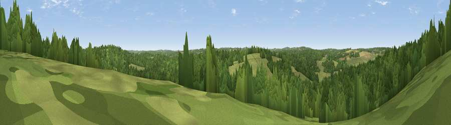

Viewpoint near Pembury
#40195 in England · top 72% of its area beats it · near PemburyThe view, rendered

A 360° render of this exact spot computed from the terrain model, tree cover and land cover — summer colours, afternoon light, calibrated against photographs of famous viewpoints. Real trees, hedges and buildings will differ in detail.
The panorama
Grey silhouette: terrain skyline in each direction (720 bearings, Earth curvature and refraction included). Dashed green: skyline with trees (+15 m) and buildings (+8 m) as obstacles. Blue strip: how far the ground is visible on each bearing.
Where the view opens
Wedge length = distance to the farthest visible ground on that bearing (vegetation-aware). Rings at 10, 25 and 50 km.
What fills the view
69% woodland · 28% grassland · 3% cropland
Angular shares of the visible panorama (visual magnitude), not map area. Landscape diversity 0.32 (0–1 Shannon).
Key numbers
More beautiful places nearby
The staircase of upgrades: each row has a higher view potential than everything closer. Driving times are estimates from straight-line distance, calibrated against real road routing — check an actual route before setting out.
| Place | Direction | Drive | Score |
|---|---|---|---|
| Viewpoint near Pembury | NNE · 1 km | ~3 min | 45.4 |
| Viewpoint near Woods Green | S · 5 km | ~11 min | 46.3 |
| Viewpoint near Brenchley | NE · 6 km | ~12 min | 51.9 |
| Viewpoint near Brenchley | NE · 6 km | ~12 min | 55.0 |
| Best Beech Hill | SSW · 7 km | ~14 min | 55.6 |
| Viewpoint near Bidborough | NW · 9 km | ~17 min | 57.2 |
| Viewpoint near Shipbourne | NNW · 16 km | ~29 min | 69.1 |
| Viewpoint near Three Oaks | SE · 32 km | ~49 min | 69.3 |
51.11985, 0.34157 · source: screening · position refined by local search. Computed location — check access rights before visiting.